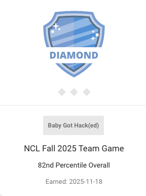
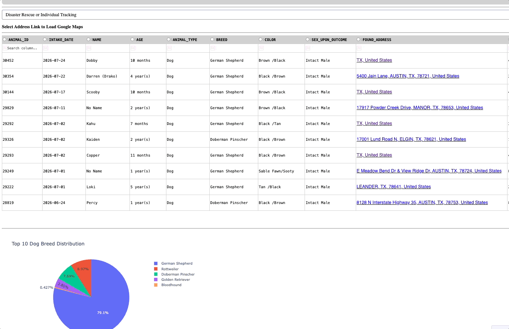
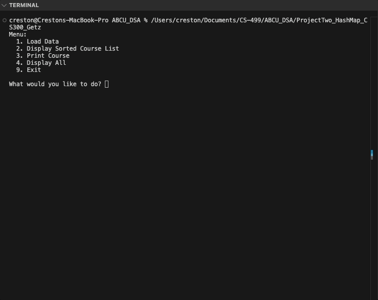

Computer Science - Southern New Hampshire University
Data, AI, and the software that makes them useful
Hello, my name is Creston Getz, a computer science student at Southern New Hampshire University (SNHU). This GitHub page is an ePortfolio showcasing my capstone projects to demonstrate the skills I have built over the past four years at SNHU. My time in the computer science program at SNHU has significantly transformed my goals, values, and technical competency. I started the program in late 2022, and nearly four years later, I have reached the end of this stage in my life.
When I originally started the program, I did not have a very specific goal in mind. I had a rough idea that I wanted to work in the technology industry, but because of how broad it was, I wanted to explore while getting my degree. I did explore a lot of sub-fields, from cybersecurity to computer science research, much of which was outside of my coursework. Ultimately, I found I enjoyed data and AI the most, specifically using data and AI to solve problems and build data infrastructure. Not only are these technologies transforming the industry, but they are well aligned with my strengths as a computer scientist, a developer, and a person.

SNHU's coursework did an excellent job of moving past theory and showing me how the theory can be used in the real world. Building this ePortfolio has taught me how to show my work, market myself, organize my thoughts, and understand why these things are important. Building software or computer solutions without being able to clearly share them can limit their usefulness and damage collaboration.
In software engineering (CS-250) and systems analysis (CS-255), I learned about how to collaborate with others, which is not something I expected in a computer science degree. These courses taught me agile/scrum methodologies, how to use project management tools such as Jira, how to design computer systems, software development lifecycles, and how to translate customer needs into a user story or engineering problem. I also learned how to write clearly and effectively to communicate with technical and non-technical stakeholders in these two classes. These skills not only helped me become a better developer, but they helped me translate people's needs and problems into something technology can solve.
Software testing (CS-320) taught me not only the theory of making good code, but also why it's important. One of my favorite case studies from this class is the Ariane 5 Flight 501, which crashed due to an integer overflow from re-using old code. The disaster cost over $370 million; the rocket veered off course 37 seconds after launch and self-destructed moments later (Ariane flight V88). Writing good code is not just about making a working solution, but one that is robust, secure, and maintainable. These courses gave me the context of how code is put together to solve problems in the real world.
Data structures and algorithms (CS-300) taught me the theory, importance, and real-world applications of these concepts. I never realized that how code is structured and how we create logic/data flows had a significant impact on speed and performance. I learned about Big O notation, space complexity, and various data structures. Additionally, I chose a project from this course as one of the two artifacts I improved for my final capstone. You can view that here.
Client/server development (CS-340) showed me how databases are used in real applications by teaching NoSQL or MongoDB. The second artifact for my capstone came from CS-340 which you can view here. One of the most important classes I took was software security (CS-305). This course helped me bridge the gap between hackers we see in movies and how software is actually vulnerable. Again, it taught me not only the theory of these attacks but also how to use the theory in the real world. I learned how to scan for vulnerabilities using a dependency check, how to prevent SQL injections, cross-site scripting, and much more. During my time at SNHU, I also participated in a National Cyber League capture the flag (CTF) competition, in which my team placed number one at my school. The CTF was a great way to apply what I learned and significantly improved my ability to work in a team. All projects I built from that point forward applied these principles and best practices.
On top of the base coursework from SNHU, there were several courses focused on my specialization in data and AI. Intro to databases (DAD-220) was my first introduction to the world of data. It taught me SQL, relational databases, indexing, and much more. Data analysis techniques (DAT-375) and data quality and cleaning (DAT-325) were excellent courses that transformed how I defined data. They taught me how data can be used to solve real business problems and what good data is. Throughout my degree, one of my favorite projects I built was analyzing storm data for the Miami Police Department. You can view that project here.
Emerging trends in computer science (CS-370) and Statistics II (MAT-303) fundamentally changed how I looked at AI. They taught me the underlying mathematics (statistics, linear algebra, etc.) and structure (artificial neural networks, etc.) that power the emerging tools we use today. I knew I wanted to work in the data field before that course, but learning about reinforcement learning, artificial neural networks, and how AI tools can be biased further confirmed my choice. Another one of my favorite projects was using reinforcement learning and a Deep Q-Network to teach a pirate to navigate a maze. You can view that project here. I have also made many projects, read many books, and taken courses related to the data field outside of my coursework. I enjoyed books such as Lean Analytics by Alistair Croll and Benjamin Yoskovitz and made projects like this oil and CPI analysis or this churn predictor. Many of the courses I took were data science courses on Codecademy.
Looking forward, I am transitioning from student to professional, having accepted a role beginning after graduation. I plan to keep building both my technical skills in data and AI and the soft skills that make that work useful to other people, whether through my job or through open source contributions. The artifacts below are evidence of the skills I bring to that work.
The two artifacts I enhanced for my ePortfolio are a project from client/server development (CS-340) and one from data structures and algorithms (CS-300). Together they show a wide range of skills and knowledge I have built over the past four years. The CS-300 artifact is a C++ course planner that implements a custom hash table, insertion sort, and chaining. The CS-340 artifact is an animal shelter dashboard that displays real data from the Austin Animal Center in Austin, Texas. It uses a Flask backend, a Dash frontend and MongoDB Atlas for the database. I chose them because between the two I could cover all three enhancement categories: software design and engineering, algorithms and data structures, and databases, while working on projects I genuinely enjoyed. The animal shelter dashboard was especially fun because it is a real world problem with real data.
Before enhancing any of the projects, I recorded a code review of the original code. I walked through the existing functionality and the planned changes. You can view it below.
Each artifact has a narrative explaining what I did and why. You can view the full narratives using the navigation bar above. What follows is a summary of the narratives and how that work maps to the five course outcomes, as well as what skills the artifacts demonstrate.
Many of the enhancements were made with other developers or stakeholders in mind. The code review walked through the original code and planned changes with an audience of peers or a manager in mind. I explained the functionality of the code, analyzed my code for errors/bugs, and walked through the planned enhancements before performing any of them. All of the artifacts were built so someone else could pick up my work. The animal shelter dashboard has extensive comments and documentation, and so does the ABCU course planner. The code review and code comments demonstrate the ability to talk about best practices in team environments. Both artifacts include code that improves maintainability, such as the RESCUE_QUERIES dictionary in the CRUD layer for the animal shelter dashboard. A technical stakeholder can change the search criteria for a new program in one central place. Having the animal shelter dashboard use a Flask backend allows for a front-end developer to build a new dashboard without needing to build a new backend.
This portfolio is a demonstration of all three forms: the code review video, three written narratives, this ePortfolio, and the animal shelter dashboard itself. The code review was recorded with a professional technical audience in mind; because it was made for peers, it is an informal code review. The written narratives provide a more formal explanation and walkthrough of the changes made. The ABCU course planner and database narratives include tables, screenshots, and links to better demonstrate the changes made. The ePortfolio itself is a visual demonstration of my work, with links, pictures, and written explanations. The animal shelter dashboard was built for non-technical stakeholders and highlights my ability to improve user experience. The data for the dashboard was cleaned and formatted to be more legible and useful to the needs of that specific user. I also added a loading indicator, alt text, and various error handling to improve the user experience.
The ABCU course planner directly demonstrates my ability to apply algorithmic principles and manage the trade-offs that come with them. The original course planner used a vector data structure, which I defended at the time because the number of courses was small and sorting was important. For my enhancement I re-approached the application with different requirements where lookup speed was a priority, sorting was less important, and memory was not a constraint. Under these new requirements I replaced the vector with a custom-made hash table using chaining. This brought the lookup from O(n), or O(log n) with binary search, down to O(1). However, it came with trade-offs. The hash table sorts courses at O(n²) with the insertion sort method I wrote and increases the space complexity from O(n) to O(m + n). To back up my decision to use a hash table I created a comparison table that compared the runtimes and space complexity of each action which can be found in the narrative. I made similar decisions with the animal shelter database. I originally considered using an aggregation pipeline and an index in my plan, but decided against both for the current data size. In the narratives I explained what would need to change if either the ABCU course planner or the animal shelter dashboard needed to scale up in the future. Such as adding an index to the database or using the standard library's sort method to improve sort time to O(n log n).
The original animal shelter dashboard had a monolithic architecture. I demonstrated my ability to create industry standard software design
by splitting the application into three separate layers: a Flask backend, a MongoDB Atlas database, and a Dash frontend.
The backend handles all communication with the database and business logic, while the frontend handles all user interaction.
These layers communicate over HTTP allowing all layers to be maintained and updated independently making the code efficient and robust.
To deliver value to stakeholders the dashboard uses real data. I pulled about 15,000 records from the Austin Animal Center API,
cleaned it with pandas, and loaded it into MongoDB Atlas. Using the real data is what makes the dashboard something an actual
dog rescue company could use. I demonstrated iterative testing with the ABCU course planner. I created a table of ten test cases that
covered valid, invalid, or edge case input. I ran these tests manually according to my plan. I found a bug in test eight where
a course in the csv file with only a course number and no course name was erroneously being added to the hash table.
I fixed the bug by adding || tokens[0].empty() || tokens[1].empty() to the if statement in the readFileAndStore method.
All of the work I did not do was documented in the narratives, such as automatic data loads, backups, and indexing.
This demonstrates my ability to document future improvements for other developers or stakeholders to understand what improvements could be made and
why they were not made.
The original animal shelter dashboard had no security at all. It had hard-coded secrets, no access control, and no input validation. I demonstrated my security mindset by adding various security features to the front facing dashboard, as well as the backend and database. When making the requirements for the dashboard I demonstrated my ability to address security flaws in software architecture by planning the following changes before performing them. I first removed all hard-coded secrets and moved them into environment variables, added a login prompt, and secured the API endpoints with an API key that will return a 401 if it is missing. I first considered using JWTs for authentication, but decided against them because every user of the dashboard will have the same permissions. Instead I opted for using an API key to secure the endpoints. For the database of the dashboard I created a least-privilege Atlas user with only read and write access to the animals collection, added a $jsonSchema validator so every field is the correct type, and kept all filters in a dictionary to prevent NoSQL injection. By adding a validator and a dictionary of filters I demonstrated my ability to ensure all data are validated. Similarly, I used quote_plus to escape address data before it goes to the Google Maps URL.
In the ABCU course planner I added additional security features to follow security best practices. I first capped the length of chains to five, after which the hash table will rehash itself and increase its size. This will prevent either a malicious or careless actor from forcing too many collisions and dragging the lookup speed down to O(n). I also added limits on the length of lines, tokens, and the total number of courses. I demonstrated my ability to consider future changes to applications by discussing the flaws and considerations of my changes in the narratives. I identified the security implications of using an API key for authentication and how the CSV file for the course planner is assumed to come from a trusted source. I also discussed why I made the decisions I did and how they can be edited or improved in the future.
Categories: Software Design and Engineering & Databases
Technology: Python | Dash | Flask | MongoDB | Pandas | PyMongo

A dashboard for Grazioso Salvare, a fictional search and rescue dog training organization. It lets staff filter Austin Animal Center data to find dogs that match the criteria for their rescue programs without calling the shelter or sorting through new intakes by hand. It is a single-page web application with a Dash frontend, a Flask backend, and a MongoDB database.
The original dashboard was a single monolithic Dash application with two code files for the entire application. It used hard-coded credentials to connect to MongoDB along with various other security flaws. To improve the application, I split the application into three layers for separation of concerns and used HTTP for communication. I moved secrets into environment variables, secured all API endpoints, and added a login prompt. Though not a core focus of the enhancement, I made many improvements to the front end or user-facing side of the dashboard. I added a loading indicator for the data table, alt text on images, and various error handling to prevent crashing the page. I removed the Dash Leaflet map and linked the addresses to Google Maps for better usability. This was my first time working with Flask or environment variables, and connecting an application to a cloud-hosted database end-to-end.
For testing my software design and engineering enhancement I used placeholder data. For the database enhancement I performed ETL and replaced it with about 15,000 records from the Austin Animal Center API. I loaded the data into a pandas DataFrame to clean/format it and create fields that I needed for the filters to work or improve readability for users. I removed any fields I did not need, converted date fields to BSON dates, created fields that were not present but needed for the dog filters such as age_in_weeks, combined many fields together such as breed or color, filled null values with a readable string, and made many other changes. The API data had no coordinate data and many incomplete addresses. I removed the Leaflet map and made each address a Google Maps link instead and escaped it with quote_plus. Because many addresses were incomplete, using Google Maps will still provide a general area unlike the Leaflet map. This allows users to get directions and look at the surrounding area. To send the cleaned DataFrame to the MongoDB database I was able to use my CRUD animal shelter object. I added a load_database method to the CRUD file using PyMongo's insert_many method. To ensure all fields were the correct data type I created a $jsonSchema validator so all fields are checked before being stored. To improve the security of the application I created an Atlas database user with only read and write access and the ability to load data only to the animals collection adhering to the principles of least privilege.
Category: Algorithms and Data Structures
Technology: C++

A terminal application built with C++ for ABCU, a fictional university, that stores and manages its computer science course catalog. It handles loading courses from a CSV file, looking up a course and its prerequisites, and printing the catalog in order. The narratives and pseudocode documents provide a detailed analysis into the runtime, space complexity, and design choices of the application. This application does not have a GUI and would be integrated into a larger application.
The original implementation used a vector data structure which I had defended because the catalog only had eight courses, and sorting mattered. I re-approached the problem with new requirements: a university-wide catalog, where lookup speed is the priority, and sorting as well as memory is not important. With these new requirements I replaced my vector implementation with a custom-made hash table rather than using the standard library's std::unordered_map. You can view both versions of the application using the link to the GitHub source code above. The hash table I made included a hash function and separate chaining using C++ pairs. Even though sorting was not an important feature I created my own way to sort the courses using insertion sort. Using a hash table improved lookup speed to O(1) compared to O(n), or O(log n) when using binary search on the vector. Prerequisite verification went from O(P·n) to O(P) and sorting went from O(n log n) to O(m + n) + O(n²) on the first load then O(n) after the first load. The narrative includes a table comparing the runtime of different actions as well as the space complexity.
On top of converting the application from a vector to a hash table, I made a number
of changes to fix bugs and improve security. I capped the chain length to five,
after which the table will rehash itself and increase its size. This prevents input
from dragging lookup speed down to O(n) if all records are put into one chain.
I added limits on line length, token length, and the total number of courses the
application can handle. I added \r\n stripping, a whitespace trim
on input, and fixed many bugs found in the old vector implementation. I performed
manual testing on the hash table version by creating a table covering valid,
invalid, and edge case inputs. In doing so, I caught a bug where a course
without a name would still be added as valid input—a bug that slipped past
me when writing the code. You can view the test table inside the narrative linked above.
A walkthrough of the original code and the enhancements I planned for each artifact.